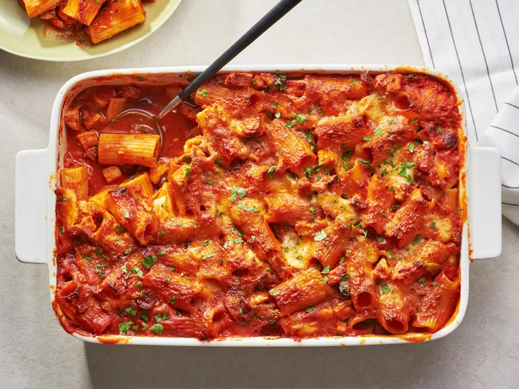

Baked Turkey Riggies

Description
If you like chicken riggies, I think you're going to love turkey riggies, especially if you're trying to disappear the last of the Thanksgiving leftovers. We cover this every year, but after a day of leftovers, and another day of sandwiches, we're usually in the mood for something a different, and this really fits the bill.
Ingredients
- 1 ½ pounds cooked, chopped turkey meat
- ½ cup chopped pepperoncini peppers
- ½ cup chopped, pitted kalamata olives
- 1 tablespoon olive oil, or as needed
- 6 ounces hot Italian sausage, casings removed
- 1 cup diced onion
- 1 cup sliced button mushrooms
- salt to taste
- ½ cup white wine
- cups chicken broth
- (28 ounce) jar prepared marinara sauce
- cup water
- ½ cup heavy cream
- 1 pound rigatoni pasta, cooked and drained
- 8 ounces fresh mozzarella cheese, cubed
- ½ cup grated Parmigiano-Reggiano cheese
- chopped Italian flat leaf parsley
Steps
- Gather all ingredients.
- Chop leftover turkey and place in a mixing bowl. Add pepperoncini peppers and kalamata olives; set aside.
- Heat olive oil in a large pot over medium-high heat. Add Italian sausage and cook until sausage is browned and crumbled, breaking it up into small pieces, about 5 minutes. Add diced onions, mushrooms, and salt. Cook until onions are soft and start to get translucent, 3 to 4 minutes.
- Deglaze the bottom of the pot with white wine and simmer until wine has evaporated, about 5 minutes. Add chicken broth, marinara sauce, water, and cream. Add turkey mixture and bring to a simmer. Reduce heat to medium low and simmer about 15 minutes.
- Meanwhile, bring a large pot of lightly salted water to a boil. Cook rigatoni in the boiling water, stirring occasionally, about 10 minutes. Drain. Preheat the oven to 400 degrees F (200 degrees C).
- Transfer the cooked rigatoni into the sauce pot and mix well. Transfer mixture to a large casserole dish. Dot surface with mozzarella cheese and push inside the pasta mixture. Sprinkle the top with freshly grated Parmesan cheese.
- Bake in the preheated oven until sauce is bubbling around the edges, and the top is nicely browned, 40 to 45 minutes. Remove from oven and let sit for 10 to 15 minutes. Sprinkle with parsley
- Serve and enjoy.